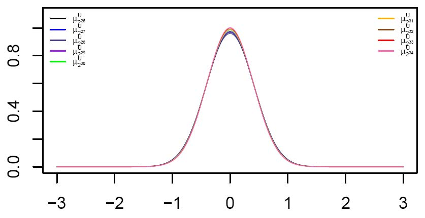

Statistical Testing Techniques For Pseudorandom generation
Tools and Software for Download: Java LIL Testing tool (JAR) (LIL Software, 432KB). For instructions, run: java -jar LILtest.jar
This site is dedicated for techniques, software package, and reports of
statistical testing techniques for pseudorandom generators. We developed LIL testing
techniques for pseudo-random generator testing. In the LIL testing,
The snapShot LIL test ideal results should look like this:

It is reported in Debian security Advisory DSA-1571-1 that
the random number generator in Debian's openssl package is predictable
since the following line of code in md_rand.c has been removed by mistake
"MD_Update(&m,buf,j); /* purify complains */". We generated 10,000 sequences
(each sequence is 2GB long) using this version of the
Debian OpenSSL (with single thread).
The snapShot LIL test results show a significant distance from the
ideal results. Details could be found in following papers.
Publications
- The idea of LIL testing was first proposed in the paper:
Yongge Wang: Linear complexity versus pseudorandomness: on Beth and Dai's result. In: Proc. Asiacrypt 99, pages 288--298. LNCS 1716, Springer Verlag. (pdf)
- Yongge Wang and Tony Nicol:
Statistical Properties of
Pseudo Random Sequences and Experiments with PHP and Debian OpenSSL.
Computers and Security (53):44-64, September 2015.
An extended abstract appeared in ESORICS 2014, LNCS 8712, pp. 454--471.
(pdf)
Elsevier version.
- Yongge Wang:
On the Design of LIL Tests for (Pseudo) Random Generators and Some Experimental Results (pdf)
- Yongge Wang: On Stochastic Security of Pseudorandom Sequences
(pdf)
- C.Calude, P.Hertling, B.Khoussainov, and Y.Wang: Recursively enumerable
reals and Chaitin's
Ω numbers.
Theoretical Computer Science 255:125--149, 2001.
(pdf)
- Y.Wang: Genericity, randomness, and polynomial time approximations.
SIAM Journal on Computing,
28(2):394-408, 1999. (pdf)
- Y.Wang: A separation of two randomness concepts.
Information Processing Letters, 69(3):115--118, 1999.
(pdf)
- Y.Wang: Resource bounded randomness and computational complexity.
Theoretical Computer Science 237(1-2):33--55, 2000.
(pdf)
- Y.Wang: Randomness, stochasticity, and approximations.
Theory of Computing Systems
32:517--529, 1999.
(pdf)
- Y.Wang: A comparison of two approaches to pseudorandomness.
Theoretical Computer Science
276(1-2):449--459, 2002. (pdf, 170K,
publisher's version)
- Y.Wang: Randomness and Complexity. PhD Thesis, 1996. (pdf)
Tools and Software for Download
- Yongge Wang: Java LIL Testing tool (LIL Software, 432KB). The JAR file runs on all platforms. For instructions, run: java -jar LILtest.jar